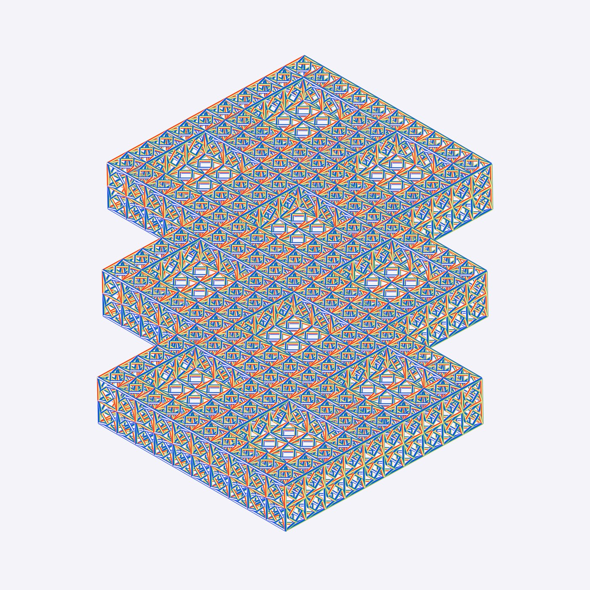

CRVI000103
Visible Cloaks - Reassemblage
|||
Designed by Will Work For Good · Rvng Intl. · 2017
info
close
←
→

#Will Work For Good
#Visible Cloaks
#Rvng Intl.
#2010s
#album cover
#blue
#alltags
source: discogs.com ↗
rights & use